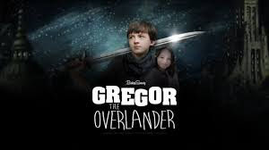

News
Suzanne collins on filling Hunger Games gaps with prequel 'The Ballad of Songbirds and Snakes'
After nearly a year of waiting, Hunger Games fans can finally get their hands on Suzanne Collins' highly-anticipated prequel novel, The Ballad of Songbirds and Snakes.
Set more than six decades before the start of the original trilogy, the book follows a young Coriolanus Snow (future demagogue of Panem) as he mentors a young Tribute from District 12 (birthplace of Katniss Everdeen, the person who brings about Snow's eventual downfall) in the run-up to the 10th Annual Hunger Games. As it turns out, the mysterious participant, Lucy Gray, has a stronger — almost cyclical — connection to Katniss than we previously thought.
Continue reading
Everything Jennifer Lawrence Has Said About 'The Hunger Games' Movies

The movie The Hunger Games — based on Suzanne Collins' book of the same name — premiered in 2012 and it immediately became a huge hit. In the dystopian sci-fi movie, Jennifer Lawrence (who was 20 years old at the time) portrayed the lead role of Katniss Everdeen and with that, she became a global star. The movie franchise wrapped up in 2015 with the last installment The Hunger Games: Mockingjay — Part 2.
Continue reading
Suzanne Collins Talks About ‘The Hunger Games,’ the Books and the Movies
“The Hunger Games,” by Suzanne Collins, came out in 2008. It is the first in a trilogy by the same name that includes “Catching Fire” (2009) and “Mockingjay” (2010). The series has more than 100 million copies in print worldwide, and spent more than 260 consecutive weeks on The Times best-seller list. The books have spawned four record-breaking films and many Katniss Halloween costumes. In a 10th anniversary edition of the book, which hits stores this month, David Levithan, a vice president and publisher at Scholastic Press, interviewed Collins. An excerpt from that interview, including potential spoilers, is below, condensed and edited for clarity and length.
Continue reading
Hunger Games: What Is The Correct Order Of Movies And Where To Watch?
Hunger Games: Children and youth dystopias dominated bookstore shelves in the late 2000s. The Maze Runner, Divergent and, of course, Hunger Games sagas rescued a type of literature that has always been very common, especially since the 1984 publication. authors decided to focus the stories on younger characters, who overnight had to assume responsibility, in an analogy to the passage from adolescence to adulthood.
Continue reading
Youth review: ‘Gregor the Overlander’ by Suzanne Collins

There are few things as good as reading a good book, and “Gregor the Overlander” definitely qualifies. It is exciting and suspenseful, with lots of twists and turns that make you wonder what happens next. If you are like me and have really enjoyed reading book series like Harry Potter, Percy Jackson, and others, you will appreciate that this book is the first in a series called The Underland Chronicles (by Suzanne Collins, author of the Hunger Games trilogy).
Continue reading